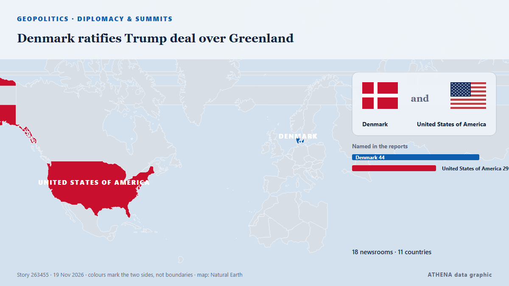

Denmark ratifies Trump deal over Greenland

The agreement expands the US military's role in Greenland, while reaffirming Danish sovereignty and Greenlanders' right to self-determination. από Free Malaysia Today
Τι άλλαξε 19 νέες αναφορές από 19 μέσα τις τελευταίες 24 ώρες.
Δείτε τις πηγές ›Τεκμήριωση: Επαρκής
Αναφέρθηκε ανεξάρτητα από 21 μέσα σε 12 χώρες από τις 8 Ιαν, πρώτο το The Local Denmark· η κάλυψη εξασθενεί. Το ATHENA εκτιμά τον κίνδυνο χαμηλό (1.2/10), κυρίως λόγω της σοβαρότητάς του και της εμβέλειάς του. Βεβαιότητα 92% (υψηλή): το επιβεβαιώνουν 21 ανεξάρτητα μέσα, μέση αξιοπιστία 75%. Μέσα ανά χώρα: Ηνωμένες Πολιτείες (6), Δανία (3), Σιγκαπούρη (3). Κάλυψη: 8 Ιαν έως 19 Νοε, 16326 ώρες.
Γιατί έχει σημασία: Οι εξελίξεις στην ασφάλεια και τη διπλωματία μπορούν να μετατοπίσουν συμμαχίες, εμπόριο και αγορές πολύ πέρα από τις χώρες που εμπλέκονται.
Τι άλλαξε: 19 νέες αναφορές από 19 μέσα στο 24ωρο έως 19 Νοε.
Πρώτη διατύπωση: Denmark expected to ratify Trump deal over Greenland on Nov 19
ΑυτοματοποιημένοΕπιλέχθηκε, ομαδοποιήθηκε και βαθμολογήθηκε με τη δημοσιευμένη μέθοδο της ATHENA από 19 ανεξάρτητα μέσα. Ο τίτλος είναι του μέσου· οι προτάσεις της ATHENA ακολουθούν σταθερά πρότυπα - δεν τις γράφει παραγωγική ΤΝ. Πώς λειτουργεί →
Πώς να διαβάσετε αυτή τη σελίδα
- Τι διαβάζετε
- 21 μέσα σε 12 χώρες ανέφεραν αυτό το γεγονός. Οι αναφορές παρακάτω εμφανίζονται με τη σειρά που δημοσιεύτηκαν· κάθε τίτλος ανοίγει το αρχικό άρθρο. Το ATHENA δεν γράφει δικά του ρεπορτάζ.
- Η εκτίμησή μας
- Για την καταγραφή — Οι αναφορές περιγράφουν ένα ολοκληρωμένο, εσωτερικό, εμπορικό ή προσωπικό ζήτημα. Το καταγράφουμε ώστε να βλέπετε ποιος το ανέφερε και πότε. Δεν παρακολουθούμε εδώ κίνδυνο ευρύτερης σύγκρουσης.
- Πόσα στοιχεία υπάρχουν
- Επαρκής Αρκετά ανεξάρτητα μέσα συμφωνούν, αλλά η εικόνα μπορεί ακόμη να αλλάξει.
Αφού αφαιρεθούν οι επαναλήψεις, τα άσχετα και τα παλιά στοιχεία, υπολογίζονται 17 από τις 22 αναφορές που παρατίθενται· το 100% των τίτλων αντιστοιχεί στο γεγονός.
- Τι δεν σημαίνει
- Το ATHENA μετρά πώς καλύπτεται ένα γεγονός, όχι αν είναι αληθές. Δεν είναι πρόβλεψη, κρίση για το ποιος έχει δίκιο ή συμβουλή.
- Τι θα την άλλαζε
- Αναφορές από άλλα ανεξάρτητα μέσα που δείχνουν διαφορετική εξέλιξη, ή σαφής επιβεβαίωση ή διάψευση από επίσημη πηγή.
Εκτίμηση R2 · ανανεώνεται με κάθε ενημέρωση της σελίδας. Το ATHENA δεν έχει δημοσιεύσει ακόμη ιστορικό επιδόσεων για αυτές τις εκτιμήσεις· όταν το κάνει, θα συνδέεται εδώ.
Με μια ματιά
Επιλέγεται, βαθμολογείται και γράφεται από τη δημοσιευμένη μεθοδολογία του ATHENA. Κανένας συντάκτης δεν παρεμβαίνει σε μεμονωμένα γεγονότα. Πώς παράγεται ›
| 08 Jan 15:18 UTC | 1 |
|---|---|
| 10 Jan 15:18 UTC | 0 |
| 12 Jan 15:18 UTC | 0 |
| 14 Jan 15:18 UTC | 0 |
| 16 Jan 15:18 UTC | 0 |
| 18 Jan 15:18 UTC | 0 |
| 20 Jan 15:18 UTC | 0 |
| 22 Jan 15:18 UTC | 0 |
| 24 Jan 15:18 UTC | 0 |
| 26 Jan 15:18 UTC | 0 |
| 28 Jan 15:18 UTC | 0 |
| 30 Jan 15:18 UTC | 0 |
| 01 Feb 15:18 UTC | 0 |
| 03 Feb 15:18 UTC | 0 |
| 05 Feb 15:18 UTC | 0 |
| 07 Feb 15:18 UTC | 0 |
| 09 Feb 15:18 UTC | 0 |
| 11 Feb 15:18 UTC | 0 |
| 13 Feb 15:18 UTC | 0 |
| 15 Feb 15:18 UTC | 0 |
| 17 Feb 15:18 UTC | 0 |
| 19 Feb 15:18 UTC | 0 |
| 21 Feb 15:18 UTC | 0 |
| 23 Feb 15:18 UTC | 0 |
| 25 Feb 15:18 UTC | 0 |
| 27 Feb 15:18 UTC | 0 |
| 01 Mar 15:18 UTC | 0 |
| 03 Mar 15:18 UTC | 0 |
| 05 Mar 15:18 UTC | 0 |
| 07 Mar 15:18 UTC | 0 |
| 09 Mar 15:18 UTC | 0 |
| 11 Mar 15:18 UTC | 0 |
| 13 Mar 15:18 UTC | 0 |
| 15 Mar 15:18 UTC | 0 |
| 17 Mar 15:18 UTC | 0 |
| 19 Mar 15:18 UTC | 0 |
| 21 Mar 15:18 UTC | 0 |
| 23 Mar 15:18 UTC | 0 |
| 25 Mar 15:18 UTC | 0 |
| 27 Mar 15:18 UTC | 0 |
| 29 Mar 15:18 UTC | 0 |
| 31 Mar 15:18 UTC | 0 |
| 02 Apr 15:18 UTC | 0 |
| 04 Apr 15:18 UTC | 0 |
| 06 Apr 15:18 UTC | 0 |
| 08 Apr 15:18 UTC | 0 |
| 10 Apr 15:18 UTC | 0 |
| 12 Apr 15:18 UTC | 0 |
| 14 Apr 15:18 UTC | 0 |
| 16 Apr 15:18 UTC | 0 |
| 18 Apr 15:18 UTC | 0 |
| 20 Apr 15:18 UTC | 0 |
| 22 Apr 15:18 UTC | 0 |
| 24 Apr 15:18 UTC | 0 |
| 26 Apr 15:18 UTC | 0 |
| 28 Apr 15:18 UTC | 0 |
| 30 Apr 15:18 UTC | 0 |
| 02 May 15:18 UTC | 0 |
| 04 May 15:18 UTC | 0 |
| 06 May 15:18 UTC | 0 |
| 08 May 15:18 UTC | 0 |
| 10 May 15:18 UTC | 0 |
| 12 May 15:18 UTC | 0 |
| 14 May 15:18 UTC | 0 |
| 16 May 15:18 UTC | 0 |
| 18 May 15:18 UTC | 0 |
| 20 May 15:18 UTC | 0 |
| 22 May 15:18 UTC | 0 |
| 24 May 15:18 UTC | 0 |
| 26 May 15:18 UTC | 0 |
| 28 May 15:18 UTC | 0 |
| 30 May 15:18 UTC | 0 |
| 01 Jun 15:18 UTC | 0 |
| 03 Jun 15:18 UTC | 0 |
| 05 Jun 15:18 UTC | 0 |
| 07 Jun 15:18 UTC | 0 |
| 09 Jun 15:18 UTC | 0 |
| 11 Jun 15:18 UTC | 0 |
| 13 Jun 15:18 UTC | 0 |
| 15 Jun 15:18 UTC | 0 |
| 17 Jun 15:18 UTC | 0 |
| 19 Jun 15:18 UTC | 0 |
| 21 Jun 15:18 UTC | 0 |
| 23 Jun 15:18 UTC | 0 |
| 25 Jun 15:18 UTC | 0 |
| 27 Jun 15:18 UTC | 0 |
| 29 Jun 15:18 UTC | 0 |
| 01 Jul 15:18 UTC | 0 |
| 03 Jul 15:18 UTC | 0 |
| 05 Jul 15:18 UTC | 0 |
| 07 Jul 15:18 UTC | 0 |
| 09 Jul 15:18 UTC | 0 |
| 11 Jul 15:18 UTC | 0 |
| 13 Jul 15:18 UTC | 0 |
| 15 Jul 15:18 UTC | 0 |
| 17 Jul 15:18 UTC | 0 |
| 19 Jul 15:18 UTC | 0 |
| 21 Jul 15:18 UTC | 0 |
| 23 Jul 15:18 UTC | 0 |
| 25 Jul 15:18 UTC | 0 |
| 27 Jul 15:18 UTC | 0 |
| 29 Jul 15:18 UTC | 0 |
| 31 Jul 15:18 UTC | 0 |
| 02 Aug 15:18 UTC | 0 |
| 04 Aug 15:18 UTC | 0 |
| 06 Aug 15:18 UTC | 0 |
| 08 Aug 15:18 UTC | 0 |
| 10 Aug 15:18 UTC | 0 |
| 12 Aug 15:18 UTC | 0 |
| 14 Aug 15:18 UTC | 0 |
| 16 Aug 15:18 UTC | 0 |
| 18 Aug 15:18 UTC | 0 |
| 20 Aug 15:18 UTC | 0 |
| 22 Aug 15:18 UTC | 0 |
| 24 Aug 15:18 UTC | 0 |
| 26 Aug 15:18 UTC | 0 |
| 28 Aug 15:18 UTC | 0 |
| 30 Aug 15:18 UTC | 0 |
| 01 Sep 15:18 UTC | 0 |
| 03 Sep 15:18 UTC | 0 |
| 05 Sep 15:18 UTC | 0 |
| 07 Sep 15:18 UTC | 0 |
| 09 Sep 15:18 UTC | 0 |
| 11 Sep 15:18 UTC | 0 |
| 13 Sep 15:18 UTC | 0 |
| 15 Sep 15:18 UTC | 0 |
| 17 Sep 15:18 UTC | 0 |
| 19 Sep 15:18 UTC | 0 |
| 21 Sep 15:18 UTC | 0 |
| 23 Sep 15:18 UTC | 0 |
| 25 Sep 15:18 UTC | 0 |
| 27 Sep 15:18 UTC | 0 |
| 29 Sep 15:18 UTC | 0 |
| 01 Oct 15:18 UTC | 0 |
| 03 Oct 15:18 UTC | 0 |
| 05 Oct 15:18 UTC | 0 |
| 07 Oct 15:18 UTC | 0 |
| 09 Oct 15:18 UTC | 0 |
| 11 Oct 15:18 UTC | 0 |
| 13 Oct 15:18 UTC | 0 |
| 15 Oct 15:18 UTC | 0 |
| 17 Oct 15:18 UTC | 0 |
| 19 Oct 15:18 UTC | 0 |
| 21 Oct 15:18 UTC | 0 |
| 23 Oct 15:18 UTC | 0 |
| 25 Oct 15:18 UTC | 0 |
| 27 Oct 15:18 UTC | 0 |
| 29 Oct 15:18 UTC | 0 |
| 31 Oct 15:18 UTC | 0 |
| 02 Nov 15:18 UTC | 0 |
| 04 Nov 15:18 UTC | 0 |
| 06 Nov 15:18 UTC | 0 |
| 08 Nov 15:18 UTC | 0 |
| 10 Nov 15:18 UTC | 0 |
| 12 Nov 15:18 UTC | 0 |
| 14 Nov 15:18 UTC | 0 |
| 16 Nov 15:18 UTC | 0 |
| 18 Nov 15:18 UTC | 0 |
| 20 Nov 15:18 UTC | 0 |
| 22 Nov 15:18 UTC | 0 |
| 24 Nov 15:18 UTC | 0 |
| 26 Nov 15:18 UTC | 0 |
| 28 Nov 15:18 UTC | 0 |
| 30 Nov 15:18 UTC | 0 |
| 02 Dec 15:18 UTC | 0 |
| 04 Dec 15:18 UTC | 0 |
| 06 Dec 15:18 UTC | 0 |
| 08 Dec 15:18 UTC | 0 |
| 10 Dec 15:18 UTC | 0 |
| 12 Dec 15:18 UTC | 0 |
| 14 Dec 15:18 UTC | 0 |
| 16 Dec 15:18 UTC | 0 |
| 18 Dec 15:18 UTC | 0 |
| 20 Dec 15:18 UTC | 0 |
| 22 Dec 15:18 UTC | 0 |
| 24 Dec 15:18 UTC | 0 |
| 26 Dec 15:18 UTC | 0 |
| 28 Dec 15:18 UTC | 0 |
| 30 Dec 15:18 UTC | 0 |
| 01 Jan 15:18 UTC | 0 |
| 03 Jan 15:18 UTC | 0 |
| 05 Jan 15:18 UTC | 0 |
| 07 Jan 15:18 UTC | 0 |
| 09 Jan 15:18 UTC | 0 |
| 11 Jan 15:18 UTC | 0 |
| 13 Jan 15:18 UTC | 0 |
| 15 Jan 15:18 UTC | 0 |
| 17 Jan 15:18 UTC | 0 |
| 19 Jan 15:18 UTC | 0 |
| 21 Jan 15:18 UTC | 0 |
| 23 Jan 15:18 UTC | 0 |
| 25 Jan 15:18 UTC | 0 |
| 27 Jan 15:18 UTC | 0 |
| 29 Jan 15:18 UTC | 0 |
| 31 Jan 15:18 UTC | 0 |
| 02 Feb 15:18 UTC | 0 |
| 04 Feb 15:18 UTC | 0 |
| 06 Feb 15:18 UTC | 0 |
| 08 Feb 15:18 UTC | 0 |
| 10 Feb 15:18 UTC | 0 |
| 12 Feb 15:18 UTC | 0 |
| 14 Feb 15:18 UTC | 0 |
| 16 Feb 15:18 UTC | 0 |
| 18 Feb 15:18 UTC | 0 |
| 20 Feb 15:18 UTC | 0 |
| 22 Feb 15:18 UTC | 0 |
| 24 Feb 15:18 UTC | 0 |
| 26 Feb 15:18 UTC | 0 |
| 28 Feb 15:18 UTC | 0 |
| 02 Mar 15:18 UTC | 0 |
| 04 Mar 15:18 UTC | 0 |
| 06 Mar 15:18 UTC | 0 |
| 08 Mar 15:18 UTC | 0 |
| 10 Mar 15:18 UTC | 0 |
| 12 Mar 15:18 UTC | 0 |
| 14 Mar 15:18 UTC | 0 |
| 16 Mar 15:18 UTC | 0 |
| 18 Mar 15:18 UTC | 0 |
| 20 Mar 15:18 UTC | 0 |
| 22 Mar 15:18 UTC | 0 |
| 24 Mar 15:18 UTC | 0 |
| 26 Mar 15:18 UTC | 0 |
| 28 Mar 15:18 UTC | 0 |
| 30 Mar 15:18 UTC | 0 |
| 01 Apr 15:18 UTC | 0 |
| 03 Apr 15:18 UTC | 0 |
| 05 Apr 15:18 UTC | 0 |
| 07 Apr 15:18 UTC | 0 |
| 09 Apr 15:18 UTC | 0 |
| 11 Apr 15:18 UTC | 0 |
| 13 Apr 15:18 UTC | 0 |
| 15 Apr 15:18 UTC | 0 |
| 17 Apr 15:18 UTC | 0 |
| 19 Apr 15:18 UTC | 0 |
| 21 Apr 15:18 UTC | 0 |
| 23 Apr 15:18 UTC | 0 |
| 25 Apr 15:18 UTC | 0 |
| 27 Apr 15:18 UTC | 0 |
| 29 Apr 15:18 UTC | 0 |
| 01 May 15:18 UTC | 0 |
| 03 May 15:18 UTC | 0 |
| 05 May 15:18 UTC | 0 |
| 07 May 15:18 UTC | 0 |
| 09 May 15:18 UTC | 0 |
| 11 May 15:18 UTC | 0 |
| 13 May 15:18 UTC | 0 |
| 15 May 15:18 UTC | 0 |
| 17 May 15:18 UTC | 0 |
| 19 May 15:18 UTC | 0 |
| 21 May 15:18 UTC | 0 |
| 23 May 15:18 UTC | 0 |
| 25 May 15:18 UTC | 0 |
| 27 May 15:18 UTC | 0 |
| 29 May 15:18 UTC | 0 |
| 31 May 15:18 UTC | 0 |
| 02 Jun 15:18 UTC | 0 |
| 04 Jun 15:18 UTC | 0 |
| 06 Jun 15:18 UTC | 0 |
| 08 Jun 15:18 UTC | 0 |
| 10 Jun 15:18 UTC | 0 |
| 12 Jun 15:18 UTC | 0 |
| 14 Jun 15:18 UTC | 0 |
| 16 Jun 15:18 UTC | 0 |
| 18 Jun 15:18 UTC | 0 |
| 20 Jun 15:18 UTC | 0 |
| 22 Jun 15:18 UTC | 0 |
| 24 Jun 15:18 UTC | 0 |
| 26 Jun 15:18 UTC | 0 |
| 28 Jun 15:18 UTC | 0 |
| 30 Jun 15:18 UTC | 0 |
| 02 Jul 15:18 UTC | 0 |
| 04 Jul 15:18 UTC | 0 |
| 06 Jul 15:18 UTC | 0 |
| 08 Jul 15:18 UTC | 0 |
| 10 Jul 15:18 UTC | 0 |
| 12 Jul 15:18 UTC | 0 |
| 14 Jul 15:18 UTC | 0 |
| 16 Jul 15:18 UTC | 0 |
| 18 Jul 15:18 UTC | 0 |
| 20 Jul 15:18 UTC | 0 |
| 22 Jul 15:18 UTC | 0 |
| 24 Jul 15:18 UTC | 0 |
| 26 Jul 15:18 UTC | 0 |
| 28 Jul 15:18 UTC | 0 |
| 30 Jul 15:18 UTC | 0 |
| 01 Aug 15:18 UTC | 0 |
| 03 Aug 15:18 UTC | 0 |
| 05 Aug 15:18 UTC | 0 |
| 07 Aug 15:18 UTC | 0 |
| 09 Aug 15:18 UTC | 0 |
| 11 Aug 15:18 UTC | 0 |
| 13 Aug 15:18 UTC | 0 |
| 15 Aug 15:18 UTC | 0 |
| 17 Aug 15:18 UTC | 0 |
| 19 Aug 15:18 UTC | 0 |
| 21 Aug 15:18 UTC | 0 |
| 23 Aug 15:18 UTC | 0 |
| 25 Aug 15:18 UTC | 0 |
| 27 Aug 15:18 UTC | 0 |
| 29 Aug 15:18 UTC | 0 |
| 31 Aug 15:18 UTC | 0 |
| 02 Sep 15:18 UTC | 0 |
| 04 Sep 15:18 UTC | 0 |
| 06 Sep 15:18 UTC | 0 |
| 08 Sep 15:18 UTC | 0 |
| 10 Sep 15:18 UTC | 0 |
| 12 Sep 15:18 UTC | 0 |
| 14 Sep 15:18 UTC | 0 |
| 16 Sep 15:18 UTC | 0 |
| 18 Sep 15:18 UTC | 0 |
| 20 Sep 15:18 UTC | 0 |
| 22 Sep 15:18 UTC | 0 |
| 24 Sep 15:18 UTC | 0 |
| 26 Sep 15:18 UTC | 0 |
| 28 Sep 15:18 UTC | 0 |
| 30 Sep 15:18 UTC | 0 |
| 02 Oct 15:18 UTC | 0 |
| 04 Oct 15:18 UTC | 0 |
| 06 Oct 15:18 UTC | 0 |
| 08 Oct 15:18 UTC | 0 |
| 10 Oct 15:18 UTC | 0 |
| 12 Oct 15:18 UTC | 0 |
| 14 Oct 15:18 UTC | 0 |
| 16 Oct 15:18 UTC | 0 |
| 18 Oct 15:18 UTC | 0 |
| 20 Oct 15:18 UTC | 0 |
| 22 Oct 15:18 UTC | 0 |
| 24 Oct 15:18 UTC | 0 |
| 26 Oct 15:18 UTC | 0 |
| 28 Oct 15:18 UTC | 0 |
| 30 Oct 15:18 UTC | 0 |
| 01 Nov 15:18 UTC | 0 |
| 03 Nov 15:18 UTC | 0 |
| 05 Nov 15:18 UTC | 0 |
| 07 Nov 15:18 UTC | 0 |
| 09 Nov 15:18 UTC | 0 |
| 11 Nov 15:18 UTC | 0 |
| 13 Nov 15:18 UTC | 0 |
| 15 Nov 15:18 UTC | 2 |
| 17 Nov 15:18 UTC | 15 |
| 19 Nov 15:18 UTC | 4 |
| 19 Nov 05:55 UTC | 0.0 |
|---|---|
| 19 Nov 11:54 UTC | 0.6 |
| 19 Nov 20:57 UTC | 1.2 |
Γιατί αυτοί οι αριθμοί
Σημασία
Πόσο πολύ και πόσο εμφανώς αναφέρεται η είδηση.
Κίνδυνος
Τι περιγράφουν οι αναφορές, βαθμολογημένο για πιθανή ζημιά. Δεν είναι πρόβλεψη.
Βεβαιότητα
Πόσο καλά την στηρίζουν οι ανεξάρτητες πηγές.
Η κάλυψη — ποιος το ανέφερε και πότε
ο τίτλος όπως δημοσιεύτηκε · ανοίγει το πρωτότυπο- The Local Denmark · ΔανίαEXPLAINER: Why is Greenland a part of the Danish Kingdom?
- The Straits Times · ΣιγκαπούρηGreenland’s ‘fatherless’ sue Denmark
- The Local Denmark · ΔανίαGreenland's 'fatherless' sue the Danish state
- The Straits Times · ΣιγκαπούρηDenmark ratifies Trump deal over Greenland, hoping to end conflict
- RTÉ News · ΙρλανδίαDanish parliament ratifies Trump deal over Greenland
- CNA (Channel NewsAsia) · ΣιγκαπούρηDenmark expected to ratify Trump deal over Greenland on Nov 19
- Times of India · ΙνδίαDenmark buckles under Trump, approves US military expansion deal in Greenland
- The Local Denmark · ΔανίαDenmark's parliament ratifies security agreement with US and Greenland
- DW English · ΓερμανίαDenmark ratifies security deal with US and Greenland
- Le Monde (English) · ΓαλλίαDenmark's parliament ratifies security agreement with US, Greenland
- Al Jazeera English · ΚατάρDenmark parliament approves security deal with Greenland and US
- CBS News (World) · Ηνωμένες ΠολιτείεςDanish lawmakers OK Greenland security deal with U.S.
- The Independent · Ηνωμένο ΒασίλειοDenmark’s government just unanimously sealed a Greenland deal with Trump
- CNBC World · Ηνωμένες ΠολιτείεςDenmark ratifies Trump security deal over Greenland after months of diplomatic tensions
- The Guardian · Ηνωμένο ΒασίλειοDanish MPs approve Greenland security pact with US
- Express Tribune · ΠακιστάνDenmark ratifies Trump deal over Greenland, hoping to end conflict
- ABC News (International) · Ηνωμένες ΠολιτείεςDenmark approves security deal with US and Greenland, seeking to finally ease tensions with Trump
- Free Malaysia Today · ΜαλαισίαDenmark ratifies Trump deal over Greenland
- UPI World News · Ηνωμένες ΠολιτείεςDanish parliament approves security pact with U.S., Greenland
- The Hill · Ηνωμένες ΠολιτείεςDanish Parliament approves US- Greenland security deal after Trump pressure
- Arab News · Σαουδική ΑραβίαDenmark approves security deal with US and Greenland, seeking to finally ease tensions with Trump
- Military Times · Ηνωμένες ΠολιτείεςDenmark ratifies Trump deal over Greenland, hoping to end conflict